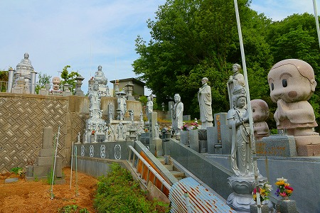
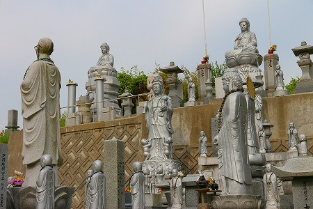

広島県某所にあるお墓が
凄い事態になっていた！
場所は地域の共同墓地の一画。
そんな中にあって一軒の墓だけが一際、異彩を放ちまくっているのだ。

墓といえどいわゆる一般的な石塔はない。
どちらかというと
面白い仏像がたっぷり並んでいる場所になっちゃっているぞ。
一体何がどうしてこうなっちゃったのか？
その理由など知る由もないが、
現実にこのような光景が出現してしまった事だけは動かしがたい事実なのである。
墓地に入ってすぐに立っている男女の石像。
男性の方は本物のメガネをかけている。
妙にリアルな。
傍らに「めおとじぞう」と刻まれた石碑があった。
普通の夫婦のように見えるが地蔵と銘打ってあるからには仏像の一種ということにしておこうか。
その隣には
コンクリ仏が。
こちらは
お助け如来といってこの墓を建てた方が若い頃病気を助けてもらったお礼に建立したのだとか。
その他にもシルバーにペイントされた仏像がゴロゴロと。

後に詳しく紹介するが、この墓には
2タイプの仏像がある。
ひとつは先ほどのめおとじぞうのような
石像タイプ。
こちらは精密な細工と写実的な描写が特徴的だ。
もうひとつはお助け如来のような
コンクリ像タイプ。
銀色にペイントされている点も共通しているが、表情が全体的にユーモラスな仏像が多い。
こちらは子安観音か。
観音サマ自体の出来としてはそんなに悪くないと思う。
いや、悪くても一向に構わないのだが。
いや、どっちかというと
悪い方が個人的には大好きなのだが。
いや、むしろ
凶悪な方がウェルカムなのだが…まあ、それは置いておくとして。
問題は足元の小僧たちですわ。
妙に落ち着いたこの表情。
最早子供にすら見えない達観具合！
観音サマにすがっているというよりは耳を添えてうっとりしているようにすら見えてくるぞ！
あまりのステキさにこちらもうっとりしちゃいましたよ…。
さらに素敵な僧形のコンクリ像も。
どうやら親鸞聖人のようで。
かなりびっくりされているようですが、一体何がどうした。
足元の台座もかなりアグレッシブに竜虎対決の図。
そしてこれまたいい感じのお地蔵サマ
どこか胡麻団子を思わせるプニュっとした感触の御顔立ちが堪らない。
先ほどのお助け如来同様、下膨れで親しみやすいお顔ですね。
お地蔵サマの光背は鉄板でした。
子安観音や親鸞聖人像の背後は一段高くなっている。

勿論、上に登って拝見させていただきましたよ。
上から下を見るとこんな感じ。画面右からめおとじぞう、お助け如来、お地蔵さま、子安観音と並んでいる。
（親鸞聖人は左端にいるのだが、フレームアウトしている）
一段高くなった部分の中央に鎮座するのは
熊野大仏と書かれた銀色の大仏。
熊野の磨崖仏のことだろうか。似て…ないな。
もしかしたら何か他の仏像を模したのかもしれないすね。
コンクリ仏としてはかなり端正な顔立ちだ。
もしかしたら名のあるコンクリ仏師が手掛けたものかもしれない。
さらに隣にも同じようなコンクリ大仏が。
大仏の台座下は蛇が絡まっていた。
先ほどの子安観音や親鸞聖人もそうだが、ウワモノの仏像はともかく、
台座のレリーフだけが妙にポンチ臭い。
別の人が作ったのだろうか？
上下のギャップが激しすぎ！
大仏から見るとこんな感じ。
一般の墓地にこのような彫像だらけの墓がある違和感。
さらに墓なのに納骨スペースがない違和感。
さらにさらに彫像の幾つかがやけにカッコいい違和感。
違和感だらけだが、それは決してダメなわけではなく、むしろ
素晴らしい違和感であった。
そうそう。
もう一人忘れてました。
石彫の胸像が。
本物の帽子とメガネ。
あ、チョンマゲまで縛ってあらあ。
こういうところが石彫の凄いところなんだよねえ。
コンクリだったらノリでチョンマゲ後付けしたりするでしょ？
でも石彫だと最初からこの部分残しておかなきゃなんですよ。
今更石彫語っても栓ならないけど、ノリでグイグイ制作していくコンクリなどの塑像と完成形に向かってストイックなまでに詰めていく彫像とはアプローチの仕方からしてまるで違うものなのだ。
ついつい一言で「仏像」とまとめてしまうが。
もちろん両者に長所短所はある。
しかし
個人的に面白いのは圧倒的にコンクリ像なんだよなー。
そんなことを思いながら、いつまでも石彫とコンクリ像を見比べていた。
この素敵な墓地（？）を目の当たりにすると、どうしてもこの墓が出来るまでのプロセスを考えてしまう。
最初は立派なお墓を作るはずだったはずなのに、どうしてこうなっちゃったんだろう？
いや、もちろん立派だが、ベクトル違うよね？
思うに
中途半端に広い敷地と財力があった結果なのではなかろうか。
普通の墓地を作るのには広すぎる敷地、普通の墓地を作るのには潤沢過ぎる予算。
この二項を与えられた時、人は「他にはないモノを作ってやろう！」スイッチが入っちゃうんですねえ。
その結果、「人並みの」とか「まあ普通の」といった世間様の枠組みから解放されて施主のオリジナリティが発揮されはじめるわけです。
コレは別にお墓だけに限ったハナシではなく、いわゆる珍スポットと言われる場所もこのケースが多い。
土地と金。
もちろん、土地もなく金もない珍スポットもたくさんあるし、そういった場所の方が皆さんシンパシーを感じやすいので取り上げられるケースが多いのだが、
実際にはどんなしょぼい珍スポットでも想像以上に金、掛かってますから。
自由になる土地と金、コレが大事なわけです。特に土地。
例えば東京や大阪や京都におっさんスパーク系の珍スポットが少ないのは純粋に土地が少ないから。
逆に都市郊外域に珍スポットが多いのは土地所有と収入のバランスが珍スポットを生み出すのに非常にいい塩梅のバランスにあるからなのだ、と思う。
ちなみにこの墓がある場所も過疎でもなく、都会でもない、ある意味極めて平均的な日本の地方だ。
つまり珍スポットという現象は
土地と金の微妙なパワーバランスの上に成立している現象なのかもしれない。
あまり断言しちゃうとつまらないし、本当は秘境に行けば行くほど珍スポットはいっぱい見つかるぜ！的な話の方が夢があっていいんでしょうけど、実際問題、数十年珍スポット見てきた感想としてはそんな感じです。
いみじくも都築響一氏が
ROADSIDEというコトバで表現した
日本でも一番つまらなそうなハンパな場所にこそ面白いスポットは存在しているのだ。